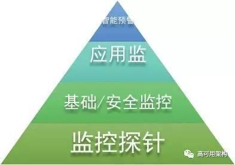
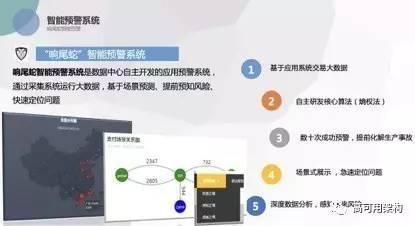
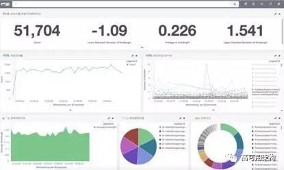

昌盛，中国人寿上海数据中心工程师。2009年加入中国人寿，先后负责多个重点应用系统项目的上线、推广、运维工作。2015年起主导公司自主应用监控系统“全球鹰”监控项目，填补了公司应用监控及业务实时展现的空白。在保险公司监控体系建设、智能预警及相关创新应用方面积累了一定的经验。现致力于智能监控、区块链等方面的研究。
提起监控，相信大家都不陌生。从马路上的监控探头、手机地图的实时路况到特斯拉的自动驾驶传感器，监控无处不在。设想有一天，路上的监控摄像头都消失了，你还放心让孩子一个人过马路吗？
IT运维领域也是一样，为保证系统的正常运行，便于运维人员及时了解当前状态，必须建设一套完整的监控体系。假设IT运维没有监控，必然导致事故频发（CPU/内存使用率、进程状态无从知晓）、debug困难（无法定位问题原因）、产品推广缓慢（用户指标、实时业务无法知晓）。到头来，怎么死的都不知道！
笔者就职于中国人寿数据中心，负责智能监控系统建设，在长期的工作中对监控体系建设有一些心得体会，愿与大家分享。
一、监控体系的金字塔结构
我们先来谈谈IT运维的监控结构。这里说的IT运维监控，是在机房基础建设之上的，不包括机房的风、水、电等基础建设的监控。IT运维监控主要分为三大领域：基础环境监控、安全监控、应用监控。基础环境监控指针对数据中心所有运行的服务器、数据库、存储、网络设施的运行状态的监控，如CPU/内存/磁盘空间使用率、网络延迟、带宽占用、数据库死锁、磁盘IOPS等，可理解为IaaS层的监控；安全监控包括对内网用户访问的审计和外部攻击的监控等。对于金融企业而言，信息安全永远是最重要的话题之一，所以要单独把安全监控列出来，作为单独的一个领域；应用监控是在基础和安全监控之上的领域，侧重应用系统的运行指标，如访问量、交易时长、交易占比、业务指标等，可理解为PaaS或SaaS层的监控。尤其是业务指标，每个系统的功能不一样，有业务系统、有客户服务系统、有办公系统，关注的业务指标也不一而足。因此，除了些共性的指标，针对每一个应用系统设计不同的监控指标，也是一件庞大而复杂的工作。
基础环境监控、安全监控、应用监控室最主要的三大领域，撑起这些领域的，是广泛部署的监控探针。就像汽车的传感器，道路的摄像头一样，探针作为监控系统的末梢，接入大量的被采集服务器，肩负起了获取最原始监控数据的重任。再好的监控算法、再牛X的实时计算平台，若原始数据都无法准确、实时获取，都是白费。很多人问笔者如何衡量一套监控系统的好坏，笔者的回答是，先看探针！
图一、监控系统的金字塔体系
二、智能预警——金字塔顶的明珠
探针、三大监控领域（基础环境、安全、应用）共同组成了中国人寿的IT监控金字塔体系，不过我们不能忘了，在塔的顶端，还有一个领域，这就是需要着重强调的智能预警。
前文提到的监控，均是在系统发生故障后或指标达到预设的阈值后才发出告警，阈值是事先固定的，例如java进程down，CPU使用率超过85%等，是一个固定的值，不会随着系统及时间的变化而变化。固定值会有一个问题：假如我们设定CPU使用率超过85%就告警，那么请问系统在凌晨没什么人使用的时候，CPU使用率超过了50%，系统是正常还是异常的？按照固定阈值算法，CPU使用率未超过85%，系统正常，不触发告警。但是用常识想一想，业务闲时系统的CPU使用率也超过50%，明显不正常啊！
这个问题怎么破？有人会说，把告警阈值动态调整，闲时设低一点，忙时设高一点。这个想法不错，但是会有两个问题：1、怎么识别闲时和忙时？2、每个指标都动态调整的话，自定义的量太大。所以，智能预警就非常重要。简单地说，所谓智能预警，就是根据该指标历史数据，动态调整当前的告警阈值，做到早发现、早追踪、早处理。智能预警引入了时间的维度，利用大数据和实时计算技术，将之前几周甚至几个月的指标进行聚合计算，得出当前时间的动态告警阈值，并根据时间的变化而不断调整。如果说监控是看现在，那么智能预警就是观过去，测未来。别小看智能预警，中国人寿自主开发的智能预警系统“响尾蛇”，在2016年成功预测了12起潜在的故障，避免了严重的生产事故。
图二、中国人寿预警系统——“响尾蛇”智能预警系统
三、监控的平台化思路
监控系统是一个统一的平台，其输入为各种原始监控数据和配置信息，输出为各类业务和告警信息，监控系统负责将输入数据经过处理和计算，输出需要的信息。监控系统平台化架构如下图所示：
图三、监控系统的平台化思路
其中输入的监控数据可通过本地、远程或手工录入的方式获取，配置信息（服务器类别、用途、通知人、联系方式等）从CMDB获取；输出的信息除发送至短信、邮件系统外，也可以通过REST API供第三方系统调用，或对接自动化运维平台。
平台化架构的优势在于开放。除了监控系统配套的探针传来的数据，也可以通过API接收合规的第三方的数据，大大拓展了监控平台的业务场景。
四、中国人寿的监控选型
市场上的监控产品种类繁多，收费的有，开源的也有。中国人寿根据自身特点，结合长期的运维经验，走出了最适合自身的一条监控选型道路。
基础环境监控方面，我们选用了zabbix。众所周知，在开源的服务器和网络监控产品中，zabbix是较为突出的一个。它具有自主发现服务器、分布式监控、可视化配置等功能。同时zabbix社区会员众多，一般的问题都可以直接解决。同时，我们针对zabbix进行了二次开发，增加了诸如统一告警页面、对接cmdb、对接云助理（一款内部办公软件）等功能。目前zabbix已接入近万台服务器，为中国人寿基础环境稳定运行提供监控保障。
安全监控方面，我们采用了ELK技术栈对大量的安全设备日志进行统一采集和管理。ELK是ElasticSearch、Logstash、Kibana三款开源系统的统称，其一般作为套件统一使用，提供日志检索服务。作为国内市值最大的保险集团，我们每天都会受到大量的外部网络攻击，部署的安全设备每天会生成大量的防护日志。因为品牌不同，日志格式不一致，监控界面也不尽相同。因此，我们以ELK为核心，将分布在各品牌安全设备中的日志统一收集，统一展现，统一管理，提高了公司整体的安全防护能力。
图四、中国人寿安全监控——“大黄蜂”安全监控
应用监控方面，针对不同的业务场景，我们选用了两套不同的方案。对于运维人员，我们采用了和安全监控相同的ELK方案，并在此基础上增加了Filebeat作为agent，采集应用系统的access log和server log，并根据统一模板定制展示。ElasticSearch强大的实时搜索能力可在毫秒内搜索上亿的业务日志信息，为告警和展现提供强有力的引擎支撑。同时，我们也自开发了远程采集接口，可以做到无agent监控，减少对被管机的压力。
图五、中国人寿应用监控——“全球鹰”应用监控（应用监控界面）
针对业务管理人员，我们自开发了业务监控系统，展现渠道保费、区域分布、用户数量、访问量等信息，便于管理层实时决策；同时大屏监控系统在每年开门红期间（保险业的“双十一”）提供强大的业务决策支撑。
图六、中国人寿应用监控——“全球鹰”应用监控（业务监控界面）
五、结语
监控的目的是更早、更准确地预测及发现系统故障，为运维人员争取恢复时间。同时针对保险行业，监控系统也被赋予了安全监测、实时业务展现和智能预警等功能。不论是开源还是商业产品，在引入前都必须针对保险行业的特殊性进行本地化改造，打破单监控产品的壁垒，形成统一的体系。
参考阅读
高可用架构
改变互联网的构建方式
长按二维码 关注「高可用架构」公众号


zabbix 常用软件